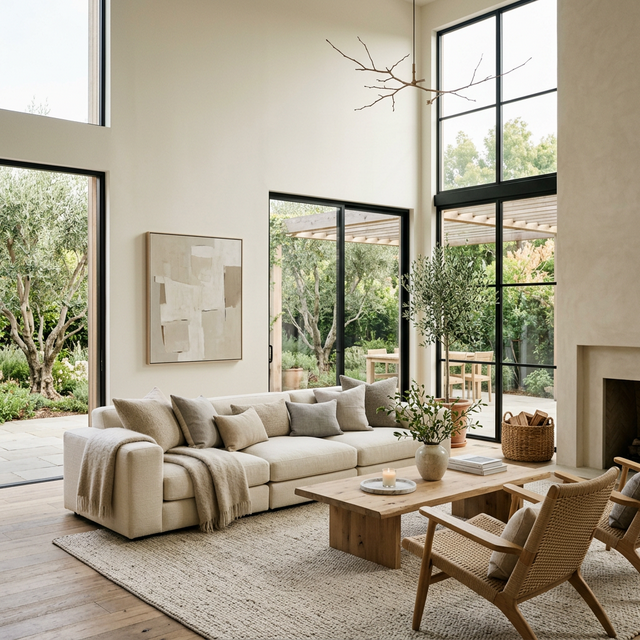

Your sofa is more than just a place to sit—it's the anchor of your living room's identity. The right sofa can completely transform the vibe of your home, turning a simple room into an editorial-worthy retreat. Whether you're hosting an elegant evening or curling up for a movie marathon, the centerpiece of your space should reflect your style and commitment to quality.
Luxury doesn't always have to come with a designer price tag and a six-month wait time. Amazon has quietly become a treasure trove for premium furniture finds, from cloud-soft velvet modulars to buttery Italian leather pieces. These high-end options offer the perfect blend of aesthetic appeal and everyday durability.
Thousands of reviewers are already obsessed with these finds because they bridge the gap between "fast furniture" and heirloom quality. They look significantly more expensive than they are, providing that coveted "quiet luxury" look without the boutique markup.
📌 Pin this guide to save inspiration for your dream living room makeover!
Follow us for more moodboards →7 Best Unique Premium Sofas & Sectionals on Amazon

The Organic Modernist: Sun-Drenched Modular Mastery
Designed for the "Sun-Kissed Sanctuary," this Modular Sectional (as seen in our earth-toned edit) brings an effortless, organic warmth to any room. Its plush, textured weave captures the light, creating a soft, inviting focal point that feels both grounded and high-end.
Perfect for: Airy, minimal living spaces and those who crave a calm, "vacation-at-home" vibe.
View on Amazon
Minimalist Noir: Sculptural Comfort Meets Architectural Design
Make a bold statement with the Morden Fort Architectural Sectional. Featuring striking angled silhouettes and a bone-white chenille finish, this piece is a masterclass in modern geometry. It’s not just a sofa; it’s a sculptural centerpiece for the design-conscious home.
Perfect for: Urban apartments and contemporary dens that demand a high-fashion edge.
View on Amazon
The Zen Anchor: Sleek Sectional for the Biophilic Home
As seen against our signature sage-arch backdrop, the Rivet Modern Sectional is the ultimate anchor for a serene space. Its clean, low profile and off-white upholstery provide a blank canvas for a life well-lived, blending seamlessly with architectural details and lush greenery.
Perfect for: Serene, nature-inspired living rooms and Japandi aesthetics.
View on AmazonThe Skyline Social: Iconic U-Shaped Penthouse Sectional
Designed for grand scale and deep conversation, this Grey U-Shaped Sectional (as seen in our skyline feature) transforms a large living space into a social hub. Its expansive layout and structured cushions offer executive-level comfort for the modern city dweller.
Perfect for: Entertainment-heavy lofts and spacious open-plan homes.
View on Amazon
The Airy Anchor: Cloud-Lite Cream Sofa
Captured in the soft glow of a morning sanctuary, this Cream Sun-Drenched Sofa is the definition of breathable luxury. Its wide seat and plush back cushions are designed to blend into high-ceilinged spaces, offering a soft landing for quiet afternoons.
Perfect for: Bright, sun-lit rooms and those seeking an effortless, "lived-in" luxe feel.
View on Amazon
The Modern Block: Minimalist Grey Mastery
Make a clean, architectural statement with the Minimalist Block Sofa. Featuring a low profile and a structured, deep-grey weave, this piece is for the home that values form as much as function. It adds immediate weight and modern sophistication to any lounge area.
Perfect for: Urban dens and minimalist homes that demand a sharp, polished edge.
View on Amazon
The Bouclé Editor: High-Textured Cream Lounge
Add a tactile dimension to your sanctuary with this Textured Bouclé Sofa. Its soft, looped-yarn finish catches the light and adds an "editorial" layer of warmth to minimal interiors. It’s a piece that feels as premium as it looks.
Perfect for: Cozy reading nooks and living rooms focused on tactile comfort.
View on AmazonHow to Pin These Looks
Loved these finds? Save them to your dream home boards to keep your interior styling goals organized. Use these 📌 pin phrase suggestions:
Expert Styling Tips for Premium Sofas
- Embrace Organic Texture: Soften a modular sofa with natural wood, hand-woven crochet, and plenty of ambient sunlight.
- The Power of Contrast: Use bone-white fabrics against dark or moody walls for an architectural "noir" look.
- Biophilic Bliss: Surround your L-shape sectional with architectural arch details and plenty of large-leaf greenery.
- Heritage Materials: Choose textures that age gracefully—from buttery leather to high-quality bouclé—to ensure your sanctuary feels timeless.
Conclusion
🛋️ From the "Skyline Social" of a penthouse to the "Zen Anchor" of a biophilic retreat, these 7 premium Amazon finds prove that luxury is about choosing the right anchor for your life. Your sanctuary starts with a single, perfectly chosen piece.
📌 Save this guide to your Pinterest boards to keep your interior styling goals within reach! Select your favorite edit above and anchor your sanctuary today.